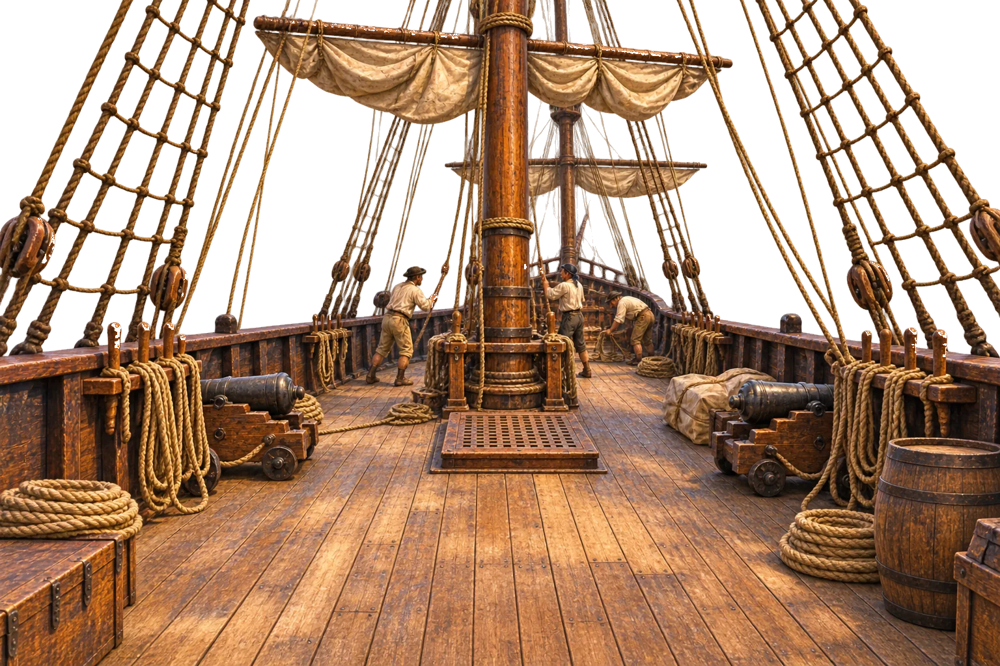

Июнь 1770 года. «Индевор» идёт внутри Большого Барьерного рифа к устью реки, где можно починить корабль.
Крути штурвал кнопками ◀ ▶, стрелками на клавиатуре или пальцем прямо по колесу — корабль может развернуться в любую сторону. В каждой гряде рифов есть два-три прохода, ищи их на карте в углу. Цель — красный флажок у устья реки.